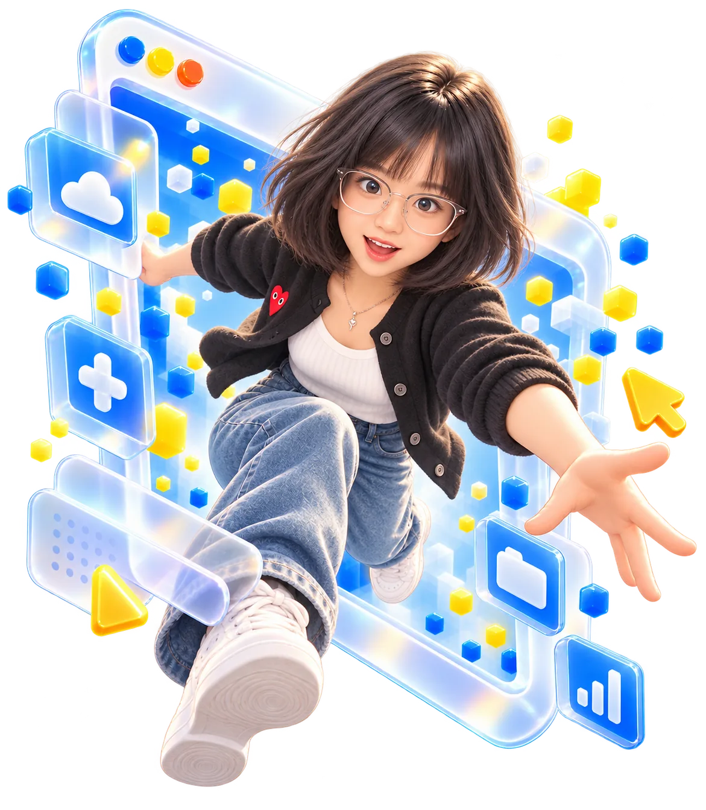
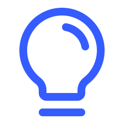
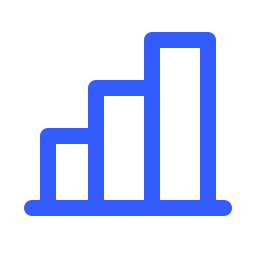

INTERNATIONAL MARKETING & BRAND DEVELOPMENT
Hello,
I’m Stella.
I’ve always enjoyed figuring out how things work — especially when it comes to products, people, and the ideas that connect them.
That’s what I enjoy most about marketing: understanding a product, finding what makes it valuable, and turning that into something people can easily understand.
Along the way, I’ve worked on websites, SEO, social media, advertising, and content production. I like being involved in the whole process, from the first idea to the final execution.
I’m curious, hands-on, and always looking for better ways to do things.

BEHIND THE
MARKETING.
Before focusing on marketing, I spent time on the business side, working directly with customers and their needs.
That experience changed the way I think about marketing.
I learned that a good marketing strategy doesn’t start with an ad or a piece of content. It starts with understanding people — what they’re looking for, what they’re struggling with, and why they choose one product over another.
To me, sales and marketing should always work together. Sales teams hear customers’ questions and concerns firsthand. Marketing turns those insights into clearer messages, stronger positioning, and content that actually addresses their needs.
And it works both ways. What we learn from marketing should help the business better understand its customers, too.
That’s the approach I bring to my work, whether I’m building a website, planning content, or running a campaign.
Listen to customers. Understand what matters. Turn those insights into growth.
Always learning.
WHAT I DO

BrandStrategy
Marketing
Creation

PaidAdvertising
Generation
EXPERIENCE
- To GSinoalta · 赛诺安特
International Brand & Digital Marketing
- To BGanzhou Zhongye Electric
Lead Acquisition & Sales Follow-up
- To CGanzhou Qianyi Culture Media
TikTok Entertainment Livestream Host & Operations
- InternshipGan Zhou Yi Hao New Materials Co., Ltd.
Foreign Trade Merchandiser
EDUCATION
Guangdong University of FinanceBachelor’s Degree in Business English
TOOLS I USE
LANGUAGES
中文 NativeEnglish TEM-8THINGS I’VE
WORKED ON.
FIND THE GAP.
SCALE WHAT WORKS.
A simple framework for making smarter marketing decisions.
01DIAGNOSEDefine the real problem we’re trying to solve.
02ANALYZEStudy customers, competitors, and market gaps.
03CHOOSEFind a clear angle that sets us apart.
04EXPERIMENTTest ideas, messages, and channels on a small scale.
05INVESTDouble down on what works and keep optimizing.
Have something in mind?Let’s talk.
GET IN TOUCH
Whether it’s a new opportunity, an interesting project, or simply a good conversation, I’d love to hear from you.